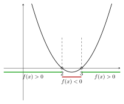
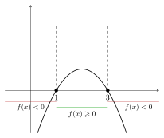

📘 Módulo 1.3: Intervalos e Inequações
1 Ordem em \(\mathbb{R}\)
Sejam \(a,b \in \mathbb{R}\): 1. \(a < b \iff b-a > 0\); 2. \(a > b \iff a-b > 0\).
1.1 Exemplos
- \(3<7\), pois \(7-3=4>0\).
- \(-5<-2\), pois \(-2-(-5)=3>0\).
Diagrama genérico:
2 Desigualdades Não-Estritas
Sejam \(a,b \in \mathbb{R}\):
- \(a \leqslant b \iff (a<b) \text{ ou } (a=b)\);
- \(a \geqslant b \iff (a>b) \text{ ou } (a=b)\).
- \(a<b\) e \(a>b\): desigualdades estritas.
- \(a\leqslant b\) e \(a\geqslant b\): desigualdades não-estritas.
3 Teoremas Fundamentais da Ordem
- \(a>0 \iff a\) é positivo.
- \(a<0 \iff a\) é negativo.
Se \(a<b\) e \(b<c\), então \(a<c\).
- Se \(a<b\), então \(a+c<b+c\).
- Se \(a<b\) e \(c>0\), então \(ac<bc\).
- Se \(a<b\) e \(c<0\), então \(ac>bc\).
Se \(a<b\) e \(c<d\), então \(a+c<b+d\).
4 Cadeias de Desigualdades
Um número \(x\) está entre \(a\) e \(b\) se \(a<x<b\).
Exemplo: \(2<x<5\).
Outras formas:
- \(a \leqslant x \leqslant b\) → intervalo fechado;
- \(a \leqslant x < b\), \(a < x \leqslant b\) → intervalos semiabertos.
5 Intervalos
5.1 Intervalo aberto
\[(a,b) = \{x\in\mathbb{R}\mid a<x<b\}\]
5.2 Intervalo fechado
\[[a,b] = \{x\in\mathbb{R}\mid a\leqslant x\leqslant b\}\]
5.3 Semiabertos
\((a,b] = \{x \mid a<x\leqslant b\}\)
\([a,b) = \{x \mid a\leqslant x<b\}\)
5.4 Infinitos
\((a,+\infty) = \{x \mid x>a\}\)
\((-\infty,b) = \{x \mid x<b\}\)
\([a,+\infty) = \{x \mid x\geqslant a\}\)
\((-\infty,b] = \{x \mid x\leqslant b\}\)
\((-\infty,+\infty)=\mathbb{R}\)
6 Inequações Lineares
Forma geral (com \(a \neq 0\)):
\[ ax+b < c \] \[ ax+b \leqslant c \] \[ ax+b > c \] \[ ax+b \geqslant c \]
📌 Observação importante:
- Se \(a=0\), a inequação se reduz a uma afirmação constante (\(b<c\), \(b\leqslant c\), etc.), sem variável.
- Se \(a\neq 0\), podemos isolar \(x\):
- Para \(a>0\), a ordem é preservada.
- Para \(a<0\), a desigualdade inverte o sinal.
6.1 Casos com \(a>0\)
\(2x-3<5 \;\;\Rightarrow\;\; x<4\)
Solução: \((-\infty,4)\).\(3x+1\leqslant 7 \;\;\Rightarrow\;\; x\leqslant 2\)
Solução: \((-\infty,2]\).\(5x-4>11 \;\;\Rightarrow\;\; x>3\)
Solução: \((3,+\infty)\).\(4x+2\geqslant 10 \;\;\Rightarrow\;\; x\geqslant 2\)
Solução: \([2,+\infty)\).
6.2 Casos com \(a<0\)
\(-2x+3<7 \;\;\Rightarrow\;\; x>-2\)
Solução: \((-2,+\infty)\).\(-3x+1\leqslant -8 \;\;\Rightarrow\;\; x\geqslant 3\)
Solução: \([3,+\infty)\).\(-4x+5>1 \;\;\Rightarrow\;\; x<1\)
Solução: \((-\infty,1)\).\(-x-2\geqslant 5 \;\;\Rightarrow\;\; x\leqslant -7\)
Solução: \((-\infty,-7]\).
📌 Resumo importante:
- Se \(a>0\), a desigualdade mantém o sentido.
- Se \(a<0\), a desigualdade inverte o sentido.
- Exemplo 1: \(2x-3<5\) (coeficiente \(a>0\))
\[ \begin{aligned} 2x-3 &< 5 && \text{(dado)}\\ 2x &< 5+3 = 8 && \text{(somar 3 dos dois lados)}\\ x &< \frac{8}{2} = 4 && \text{(dividir por 2>0, preserva o sinal)} \end{aligned} \]
✅ Solução (intervalo): \((-\infty,4)\).
📌 Checagem: \(x=3 \Rightarrow 3<5\) (verdadeiro); \(x=4 \Rightarrow 5\not<5\) (falso).
- Exemplo 5: \(-2x+3<7\) (coeficiente \(a<0\))
\[ \begin{aligned} -2x+3 &< 7 && \text{(dado)}\\ -2x &< 7-3 = 4 && \text{(subtrair 3 dos dois lados)}\\ x &> \frac{4}{-2} = -2 && \text{(dividir por -2<0, \textbf{inverte} o sinal)} \end{aligned} \]
✅ Solução (intervalo): \((-2,+\infty)\).
📌 Checagem: \(x=0 \Rightarrow 3<7\) (verdadeiro); \(x=-2 \Rightarrow 7\not<7\) (falso).
Resumo didático:
- Somar/subtrair: mantém o sentido.
- Multiplicar/dividir por número positivo: mantém o sentido.
- Multiplicar/dividir por número negativo: inverte o sentido.
7 Inequações Quadráticas
Resolver analisando a parábola \(y=ax^2+bx+c\).
📌 Exemplo: \(x^2-5x+6>0\)
- Raízes: \(x=2,3\)
- Parábola abre para cima.
- Sinal positivo fora de \((2,3)\).
- Solução: \((-\infty,2)\cup(3,+\infty)\).
Diagrama na reta real:
Gráfico da parábola:

📌 Exemplo: \(x^2-5x+6>0\)
Identificação: trata-se de uma inequação quadrática com \(a=1>0\), \(b=-5\), \(c=6\).
Equação associada:
\[ x^2 - 5x + 6 = 0 \]Discriminante (Δ):
\[ \Delta = b^2 - 4ac = (-5)^2 - 4\cdot 1 \cdot 6 = 25 - 24 = 1 \]Raízes reais:
\[ x = \frac{-b \pm \sqrt{\Delta}}{2a} = \frac{5 \pm 1}{2} \] Logo, \(x_1=2\) e \(x_2=3\).Esboço da parábola: como \(a=1>0\), a parábola é côncava para cima.
Sinal da parábola:
- Para \(x<2\), a parábola está acima do eixo (\(f(x)>0\)).
- Para \(2<x<3\), a parábola está abaixo do eixo (\(f(x)<0\)).
- Para \(x>3\), a parábola volta a ficar acima do eixo (\(f(x)>0\)).
- Para \(x<2\), a parábola está acima do eixo (\(f(x)>0\)).
Conclusão (solução da inequação \(f(x)>0\)):
\[ x \in (-\infty,2)\cup(3,+\infty) \]
Diagrama na reta real:
Gráfico da parábola e estudo do sinal:
📌 Exemplo: \(-x^2+4x-3 \geqslant 0\)
Identificação: inequação quadrática com \(a=-1<0\), \(b=4\), \(c=-3\).
Equação associada:
\[ -x^2+4x-3=0 \]Determinante (Δ):
\[ \Delta = b^2-4ac = (4)^2 - 4\cdot(-1)\cdot(-3) = 16 - 12 = 4 \]Raízes reais:
\[ x=\frac{-b\pm\sqrt{\Delta}}{2a} = \frac{-4\pm 2}{-2} \] Logo, \(x_1=1\) e \(x_2=3\).Esboço da parábola: como \(a=-1<0\), a parábola é côncava para baixo.
Isso significa que a parábola está acima do eixo \(x\) entre as raízes e abaixo fora delas.Sinal da parábola:
- Para \(x<1\), \(f(x)<0\).
- Para \(1\leqslant x\leqslant 3\), \(f(x)\geqslant 0\).
- Para \(x>3\), \(f(x)<0\) novamente.
- Para \(x<1\), \(f(x)<0\).
Conclusão (solução da inequação \(f(x)\geqslant 0\)):
\[ x \in [1,3] \]
Diagrama na reta real:
Gráfico da parábola e estudo do sinal:

- Represente na reta real:
- \((1,5]\)
- \((-\infty,-2)\)
- \([-3,3]\)
- \((1,5]\)
- Resolva:
- \(3x+1\geqslant 7\)
- \(x^2-4\leqslant 0\)
- \((x-1)(x-4)<0\)
- \(3x+1\geqslant 7\)
- bolinha aberta em 1, fechada em 5
- até \(-2\) aberto
- fechado de \(-3\) a \(3\)
- bolinha aberta em 1, fechada em 5
- \([2,+\infty)\)
- \([-2,2]\)
- \((1,4)\)
- \([2,+\infty)\)